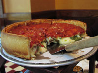

First Love: Comfort Food
Chicago Style PizzaWe have Rudy Malnati of Chicago's Pizzeria Uno to thank for this decadent, deep-dish style pizza made with quality ingredients and sporting the sauce on top. Although devoted advocates will claim that you can't get authentic Chicago style pizza without using Chicago water, deep-dish pizza the Chicago way is still a treat you can approximate in your own kitchen. When you're preparing this variety of pizza, don't forget to use sliced mozzarella instead of shredded. It will help keep the crust from getting soggy. Good quality sausage, and plenty of it, helps, too. Finish it all off in a very hot oven. The basic recipe is a good place to begin, but the flour, yeast, and ambient humidity in your home will all have an impact on the final product. After a couple of attempts, you're bound to get a good approximation of this classic that suits your taste. To save yourself some effort, try prepping the dough in your bread maker. Click here for the recipe! |
 |